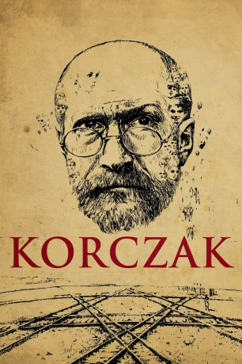

#11112 Korczak
 
 IMDB-Wertung: 7.5 / 10
IMDB-Wertung: 7.5 / 10  Metascore: 0
Metascore: 0 
Der idealistische Kinderarzt und Schriftsteller Janusz Korczak ist Leiter eines vorbildlichen Heims für jüdische Waisenkinder. Nach dem deutschen Überfall auf Polen zwingen die Nazis den engagierten Pädagogen, sein Kinderheim ins Warschauer Ghetto zu verlegen. Mit unermüdlichem Elan trotzt er den entsetzlichen Lebensbedingungen, beschafft mit allerlei Tricks Nahrungsmittel und versucht, Würde und Persönlichkeit der Kinder zu achten - pädagogische Grundsätze, die seine Arbeit schon vor dem Krieg bestimmt haben. Als die Deutschen das Ghetto räumen, bildet selbst das Waisenhaus keine Ausnahme. Freunde mit guten Verbindungen wollen ihn zur Flucht ins Ausland überreden, doch Korczak lässt die ihm anvertrauten Kinder nicht im Stich.
Jahr: 1990
Dauer: 117 Minuten
FSK: 12
Land: Polen Studio: absolut MEDIENTonspuren:
Untertitel:
Auflösung: 1080p (1760x1080) Größe: 8960 MB
Genre: Drama, Krieg, Biographie
Regisseur: Andrzej Wajda
Drehbuch: Agnieszka Holland
Soundtrack: Wojciech Kilar
Darsteller:
- Wojciech Pszoniak als Henryk Goldszmit vel Janusz Korczak
- Ewa Dalkowska als Stefania 'Stefa' Wilczynska
- Teresa Budzisz-Krzyzanowska als Maryna Rogowska-Falska
- Marzena Trybala als Estera
- Piotr Kozlowski als Heniek
 Zbigniew Zamachowski als Ichak Szulc
Zbigniew Zamachowski als Ichak Szulc- Jan Peszek als Max Bauer
- Aleksander Bardini als Adam Czerniaków
- Maria Chwalibóg als Czerniaków's wife
- Andrzej Kopiczynski als Dyrektor w Polskim Radiu
- Krystyna Zachwatowicz als Szloma's mother
- Wojciech Klata als Szloma
- Agnieszka Krukówna als Ewka
- Anna Mucha als Sabinka
- Robert Atzorn als German Doctor
- Janusz Bukowski als Polish doctor in prison
- Stanislawa Celinska als Sklepowa
- Edgar Hoppe als
- Ewa Telega als Byla wychowanka Korczaka
- Zygmunt Kestowicz als Piotr Zalewski
- Agnieszka Kumor als
- Olaf Lubaszenko als Tramwajarz
- Katarzyna Laniewska als Pracownica w sierocincu Korczaka
- Wlodzimierz Press als Zyd na ulicy getta
- Danuta Szaflarska als Mrs. Bauer, Max's mother
- Zbigniew Suszynski als Student
- Jacek Wójcicki als Wychowanek Korczaka, bojowiec Bundu
- Stanislaw Brudny als Polish man in prison
- Teresa Szmigielówna als
- Ryszard Janikowski als
- Wojciech Skibinski als Jewish policeman (uncredited)
- Jerzy Zass als German wachman on the bridge
- Michal Staszczak als Józek
- Karolina Czernicka als Natka
- Maria Weymayr als
- Adam Siemion als Abramek
- Wojciech Radecki als
- Bernhard Howe als
- Piotr Kazimierski als
- Grzegorz Klein als
- Alicja Migulanka als Washing woman
- Jan Prochyra als Gancwajch
- Aniela Swiderska-Pawlik als
- Tomasz Traczynski als
- Jerzy Walczak als
- Maciej Winkler als
- Witold Bielinski als German soldier
- Jacek Domanski als
- Tadeusz Hanusek als
- Hanna Kossowska als
Datei: X:\1990\Korczak (1990, FSK12, 1760x1080).mkv seit 24.04.2019
Festplatte: Gemischt-01+Anime
 Es gibt insgesamt 52 Filme in der Gruppe '1990'
Es gibt insgesamt 52 Filme in der Gruppe '1990'